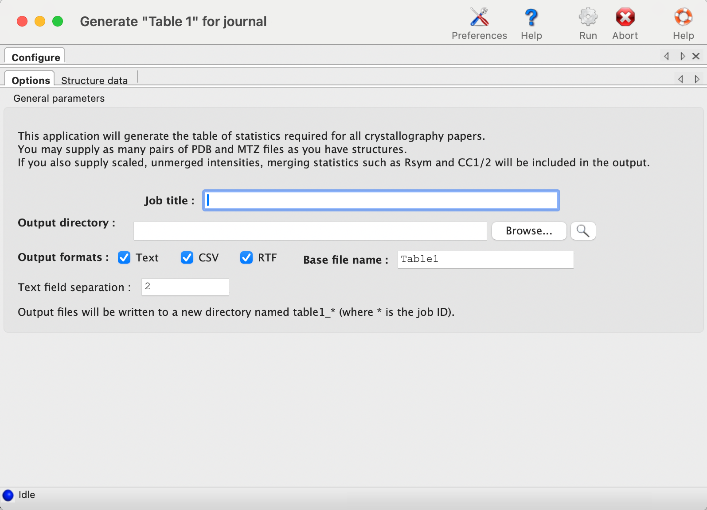
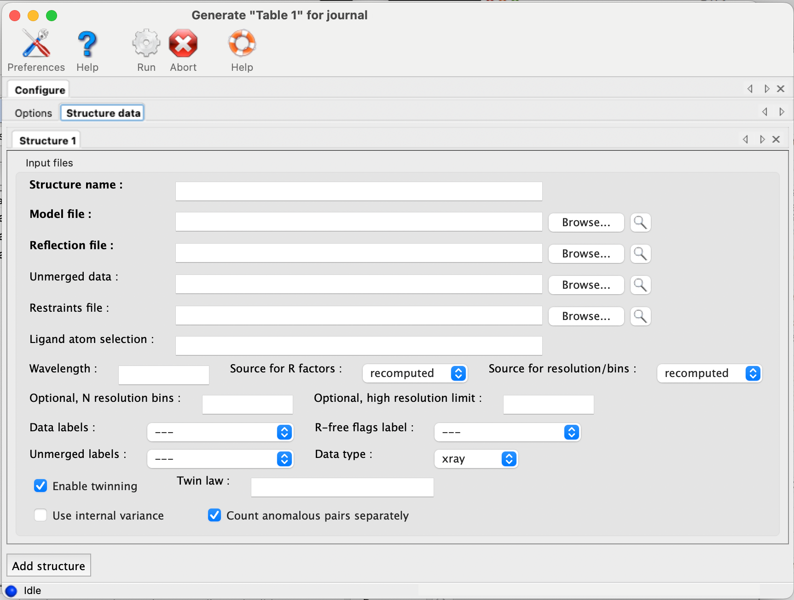
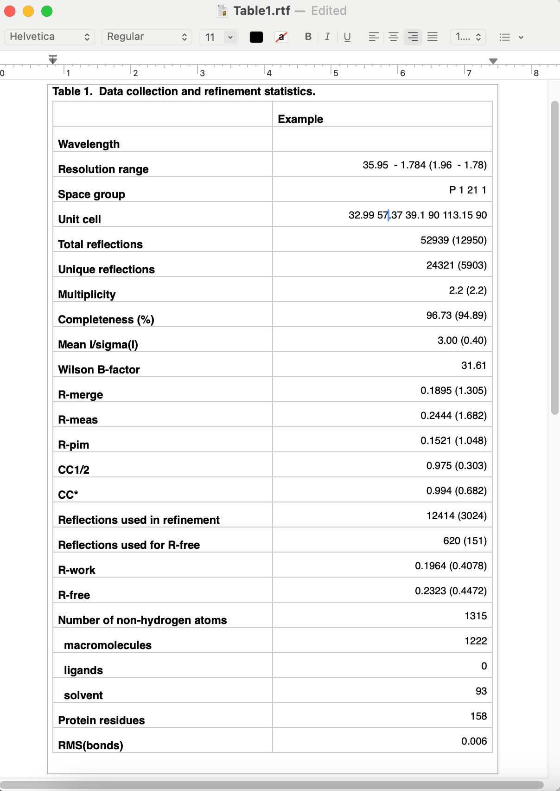

This program is experimental and still in development! Please report any problems to help@phenix-online.org.
The utility phenix.table_one is a tool for generating the standard table of crystallographic statistics required by most scientific journals. It combines the validation features of phenix.model_vs_data with the ability to calculate merging statistics normally only found in data processing log files. Multiple structures may be input, and a separate column will be generated for each one.
The program is available both in the GUI and the command line; however, because the multiple-structure input makes the command line version more cumbersome to run, this document will generally reference the GUI version. A full list of parameters (with brief explanations) can be found below.
Each structure has a separate tab for data input. The final model and data file including R-free flags are required; these should usually be the same files you will submit to the PDB. It is recommended that you provide any CIF (restraints) files for non-standard ligands present in the model; otherwise, eLBOW will be run to generate restraints for any unrecognized residues, but this is frequently less accurate when only the model is available. If you have multiple CIF files in a single directory you may specify the directory path instead of the individual files.

If you have the scaled-but-unmerged intensities (for instance, processed using the "no merge original index" macro in HKL2000/Scalepack), you can also enter these at the bottom of the panel. This will allow the program to re-calculate merging statistics such as the multiplicity/redundancy, R-sym, and R-meas. (Previous versions also attempted to parse the logfiles from data processing software, but this feature has been removed due to unreliability and difficulty of maintenance.) If you do not supply unmerged data, the fields relevant to this step will be left blank in the final document.
The program has relatively few other options beyond the structure inputs. Multiple processors may be utilized if you have input more than one dataset. The most important option is the choice of whether to use phenix.model_vs_data to calculate the final R-factors, or take the values reported in the PDB header. If the model was refined in phenix.refine and the full resolution range present in the data file was used, these should be nearly identical. For other programs such as REFMAC, there is typically a small margin of error (usually around one percent or less) due to implementation details. In addition, for structures with small twin fractions which did not use a twin target in refinement, phenix.model_vs_data may recalculate R-factors that are several percent lower. In these cases it is better to use the values reported in the header, to avoid discrepancy between the article and the PDB deposition.

By default the program outputs text and RTF formats in a new directory. The RTF file may be edited with Microsoft Word or most other word processing software, and/or copied into another document. Final appearance of a typical result is shown below; usually some editing is required to ensure proper formatting. For data-related statistics (including the R-factors), values for the highest-resolution 10% of reflections will be displayed in parentheses next to the overall value.

{{phil:phenix.table_one}}